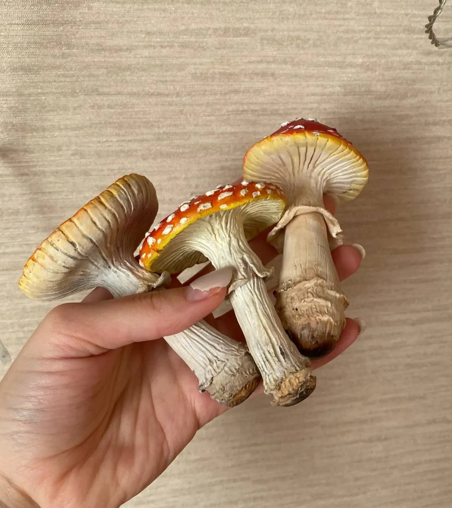
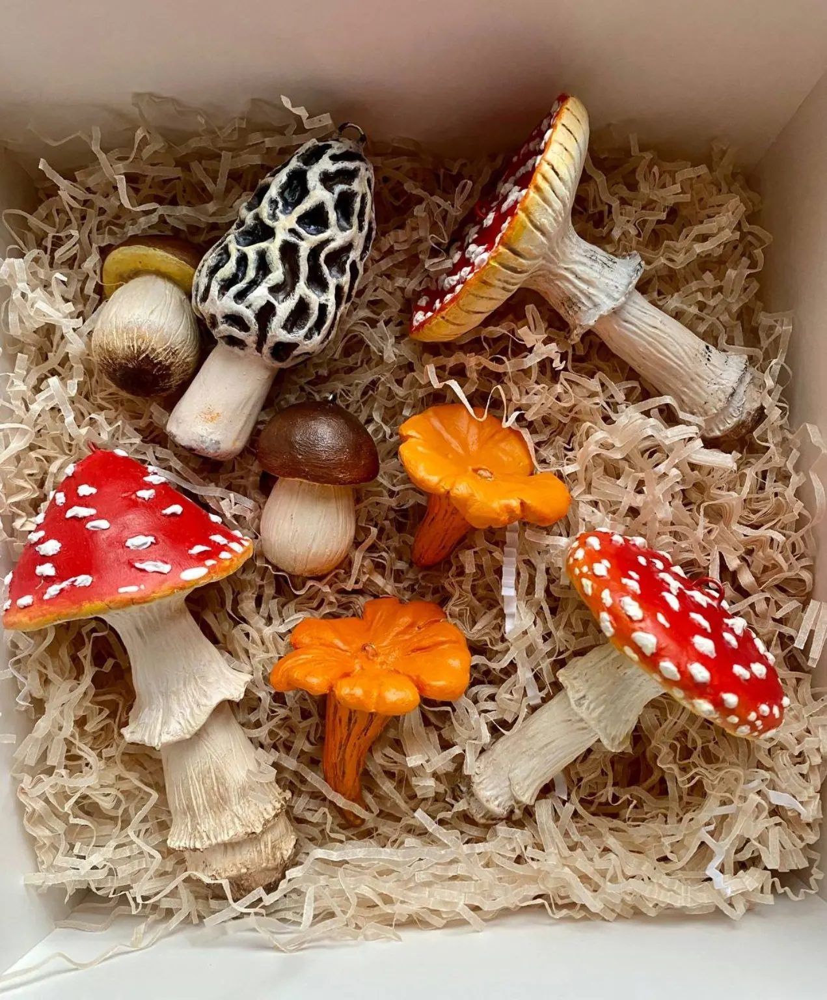
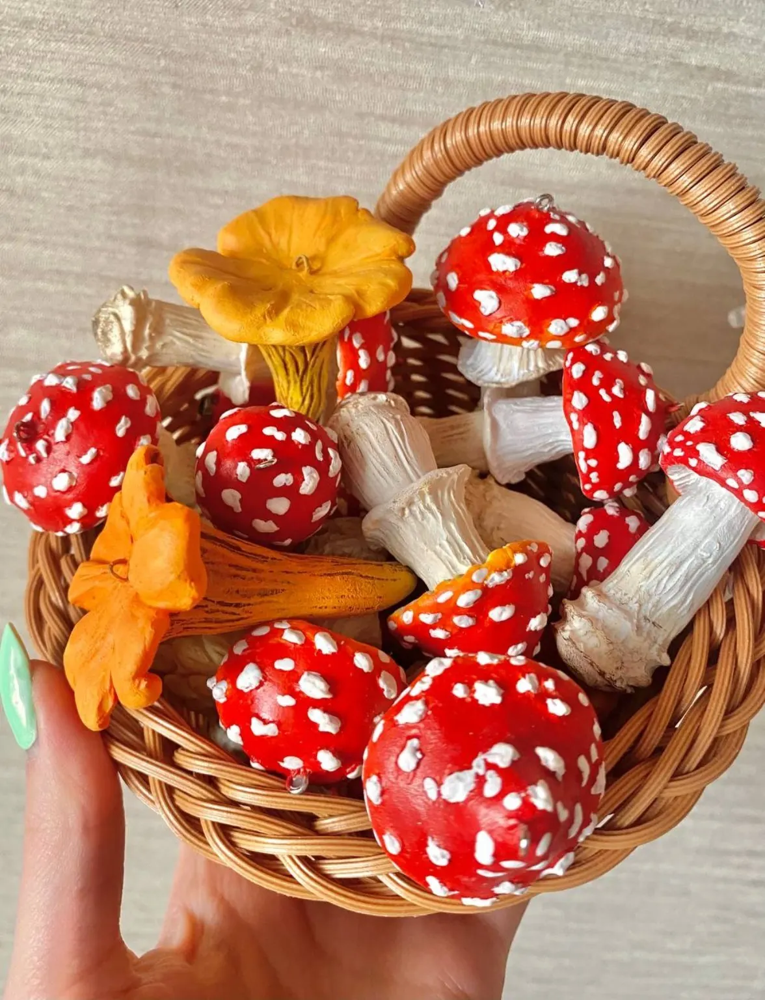
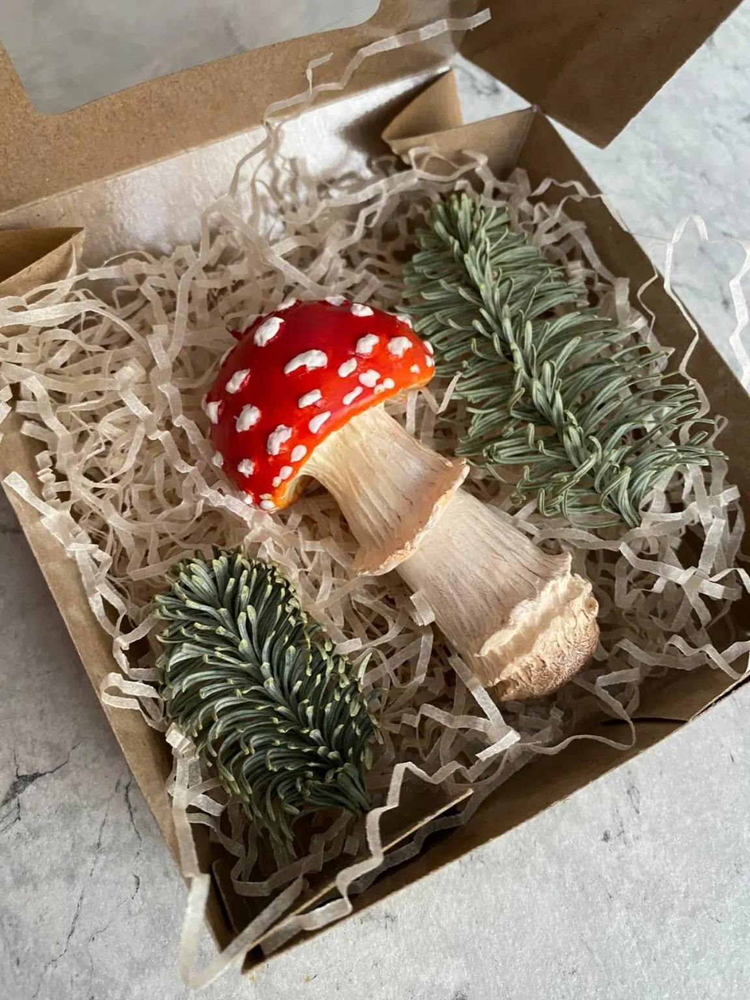
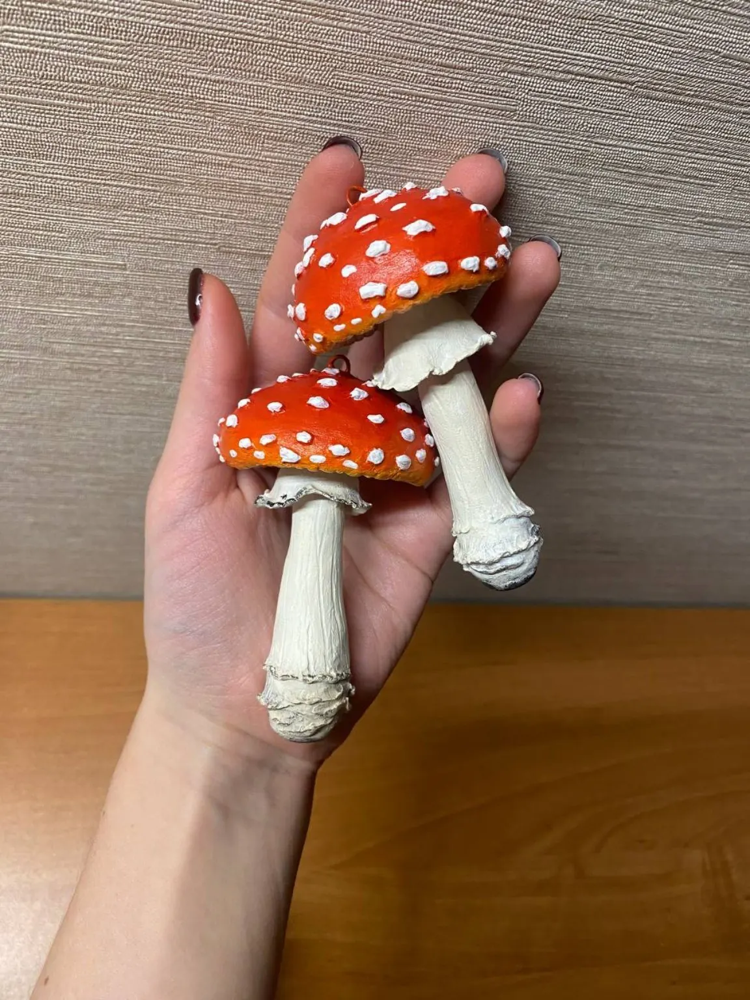
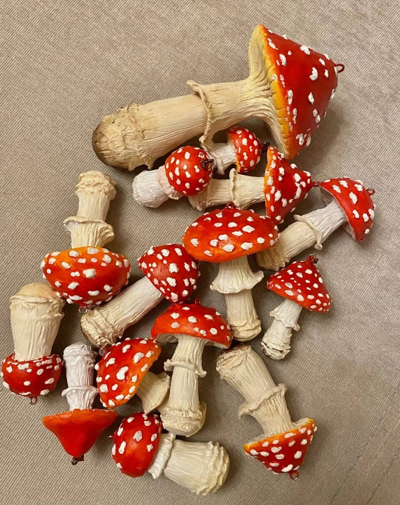
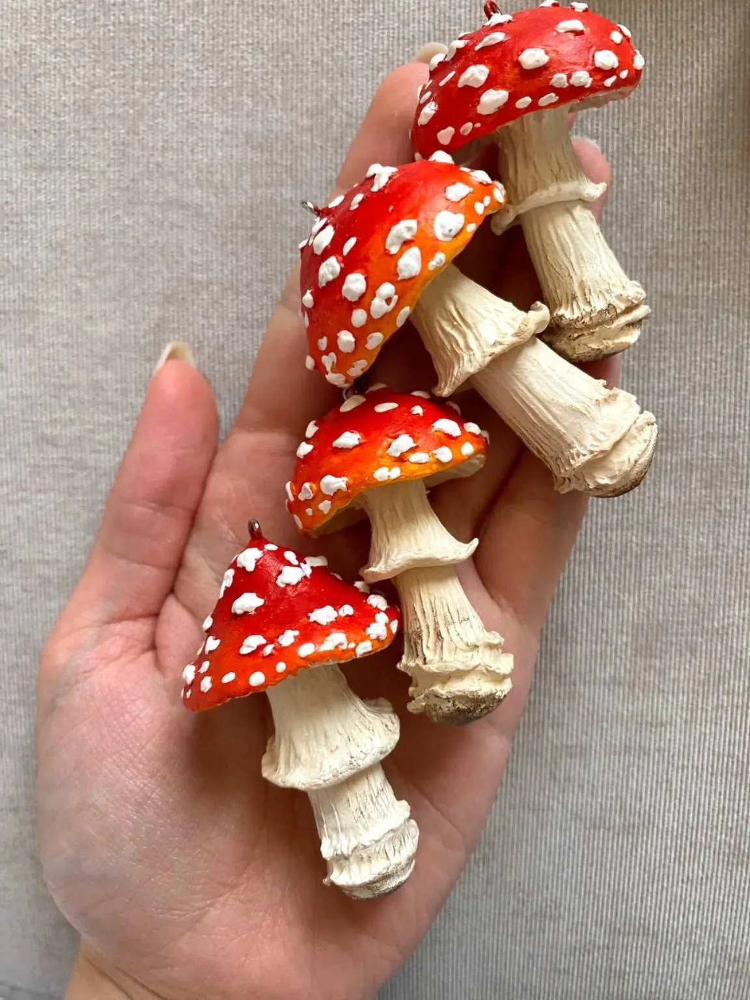

Первые пять
Партия для себя и экспериментальная публикация на Авито.

Мир Мастерской
Лесные Жители и история первых мухоморов и трёх сезонов настоящего грибного ажиотажа.
История от первого лица
Изначально первыми ёлочными игрушками, которые я сделала, были мухоморы. Началось с небольшой партии из пяти штучек — сделала их для себя, но в рамках эксперимента решила выложить на Авито.
В итоге произошёл настоящий ажиотаж. Изделия из наличия разлетались за один-два дня, потом я и вовсе не успевала делать их «на сток» и изготавливала только на заказ.
Это было настоящее мухоморное безумие. Я даже не знаю, сколько всего я их сделала: с такой скоростью лепила и отправляла, что не успевала ни считать, ни фотографировать.
В 2022–2024 годах с сентября по декабрь я воевала с мухоморами и набивала руку в скульптуре.

Хронология
Партия для себя и экспериментальная публикация на Авито.
Работы исчезали за один-два дня, заказы шли один за другим.
Мухоморы стали школой скорости, формы и ручной скульптуры.
Галерея






